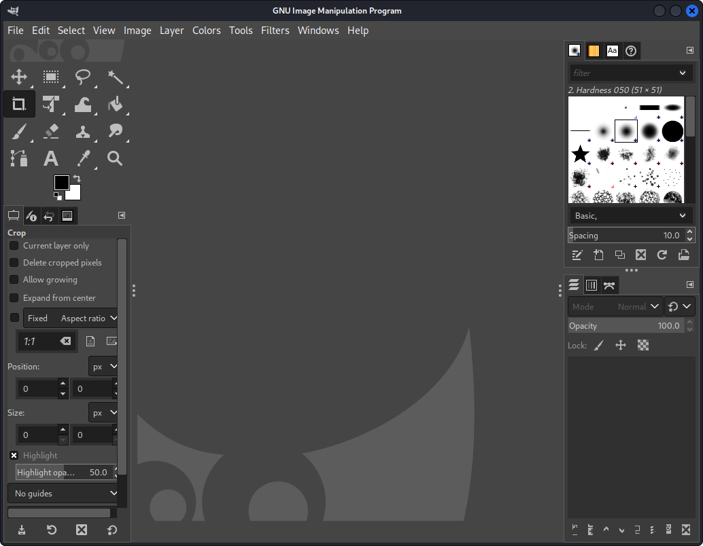
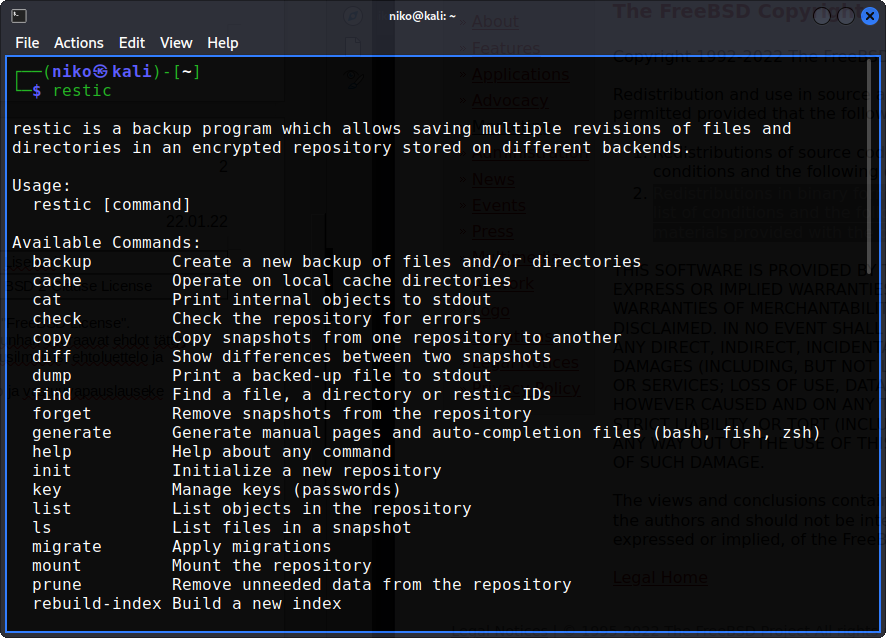
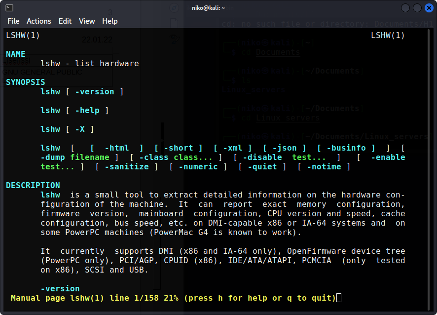

Niko
Nyman Tehtävä
Haaga-Helia University of Applied Science
ICT4TN021-3018
H1(c)(d)
Ohjelma |
Kuvaus |
Lisenssi |
GIMP |
Kuvankäsittelyohjelma |
GNU GENERAL PUBLIC LICENSE v3
|
GNU GPL Lisenssi antaa kenelle tahansa oikeuden käyttää, kopioida, muuttaa ja jakaa edelleen ohjelmaa ja sen läähdekoodia. Mikäli ohjelmaa tai sen muunnelmaa jaetaan tulee lähdekoodi julkaista samalla lisenssillä, eikä ohjelman käytöllä tai levitykselle saa asettaa lisärajoituksia. Lisenssi ei estä kaupallista käyttöä. Versioissa on eroja.
GNU GPLv3
“keskeisimmät uudistukset tähtäsivät muunnellun koodin suorittamista rajoittavien laitteistoratkaisujen muodostaman porsaanreiän, DRM:n murtamisen kieltävän lainsäädännön sekä ohjelmistopatenttien muodostamien rajoitteiden torjumiseen.”

Ohjelma |
Kuvaus |
Lisenssi |
Restic |
Varmuuskopiointi |
BSD 2-Clause License |
BSD 2-Clause License myös nimellä Simplified BSD License" and the "FreeBSD License".
Käyttäjä voi muokata, kopioida ja jakaa ohjelmaa ja sen lähdekoodia kunhan seuraavat ehdot tättyy:
Lähdekoodin uudelleenjakelussa on oltava mukana tekijänoikeusilmoitus, ehtoluettelo ja vastuuvapauslauseke
Binäärimuodossa jaettaessa: tekijänoikeusilmoitus, ehtoluettelo ja vastuuvapauslauseke

Ohjelma |
Kuvaus |
Lisenssi |
Lshw |
Listaa laitteistotietoja |
GNU GENERAL PUBLIC LICENSE v2 |
GNU GPL
Lisenssi antaa kenelle tahansa oikeuden käyttää, kopioida, muuttaa ja jakaa edelleen ohjelmaa ja sen läähdekoodia. Mikäli ohjelmaa tai sen muunnelmaa jaetaan tulee lähdekoodi julkaista samalla lisenssillä, eikä ohjelman käytöllä tai levitykselle saa asettaa lisärajoituksia. Lisenssi ei estä kaupallista käyttöä. Versioissa on eroja.
GNU GPLv2
ei saa lainkaan jakaa GPL-ohjelmistoa, jos se olisi mahdollista ainoastaan toisten käyttäjien vapauksia rajoittamalla (esimerkiksi jos laki antaisi luvan jakaa ohjelmistoa ainoastaan binäärimuodossa).
